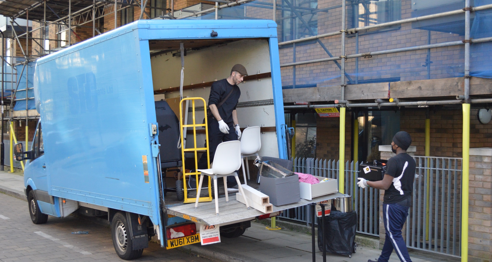

House removals London
Full and partial home removals for houses, flats and apartments, including loading, transport and careful room-by-room unloading.

Men With Van helps Londoners move house, relocate offices, deliver furniture and manage storage runs with a dedicated Luton van fleet, careful movers, clear quotes and a booking process built around speed.
Real company photos
Real removals photos help customers know they are booking an active Luton van team, not a faceless booking form. See loading, packing, house moves, apartment moves and multi-van jobs.
View full galleryRemoval services
Book practical help for house removals, office relocations, flat moves, student moves, furniture delivery, storage runs and same-day moving support across London.
Full and partial home removals for houses, flats and apartments, including loading, transport and careful room-by-room unloading.
Business moves for desks, chairs, IT equipment, boxes and light commercial items, planned to reduce downtime.
Flexible Luton van help for small removals, marketplace purchases, bulky items, storage units and urgent London collections.
Smart support for stairs, tight access, shared buildings, halls of residence and compact city moves.
Sofas, wardrobes, beds, appliances and fragile furniture moved with the right number of Luton vans and movers.
Optional packing and wrapping support, with furniture dismantling and reassembly included as part of the standard move.
London coverage
Our teams cover local and cross-London removals with clear quotes, careful handling and a booking flow designed to confirm the right van, movers and arrival time.
Men With Van supports moves across Central, North, South, East and West London, including office moves, house removals, flat removals, student moves, storage transfers and furniture courier work with a Luton van fleet.
For quote accuracy, customers should share parking restrictions, floor level, lift access, item list, dismantling needs and timing. That keeps the booking smooth and helps avoid moving-day surprises.
Transparent pricing
Every booking starts with a two-hour minimum. The final quote is based on Luton vans, movers, hours, mileage, stairs, congestion zone and VAT.
1 Luton van
£50/hr + VAT
Minimum two-hour booking. Best for lighter loading, storage runs and simple collections.
Most requested
£65/hr + VAT
Minimum two-hour booking. A balanced setup for flat moves, furniture and many house removals.
Extra labour
£80/hr + VAT
Minimum two-hour booking. Recommended for stairs, heavier items and faster loading.
Professional standards
Clear arrival windows, item checks, route planning and the right number of Luton vans for each removal.
Customers should understand how items are wrapped, loaded, secured and unloaded safely.
Office relocations need timing, communication and careful handling of desks, screens and equipment.
Every online booking is designed to capture the key move details, payment choice and customer confirmation cleanly.
Booking journey
Search-friendly answers
Same-day removals can be supported subject to Luton van availability, parking, access and the size of the move. The quote form is designed to capture the details needed quickly.
Yes. The service positioning covers office removals, desks, chairs, boxes, monitors, storage moves and small business relocations across London using one or more Luton vans.
Pickup and delivery postcodes, move date, item list, stairs, lift access, parking restrictions, packing needs and dismantling requirements all help produce a clearer quote.
Yes. The homepage is written for house removals, flat removals, student moves, furniture delivery and Luton man and van hire across London.
Ready to move?